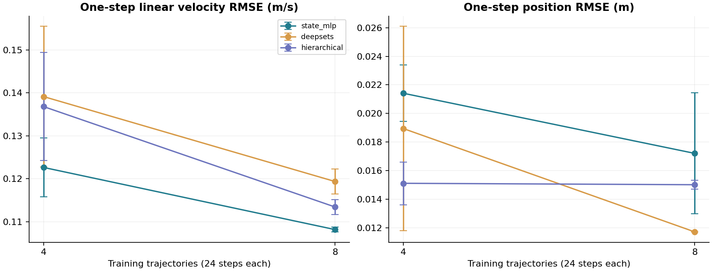
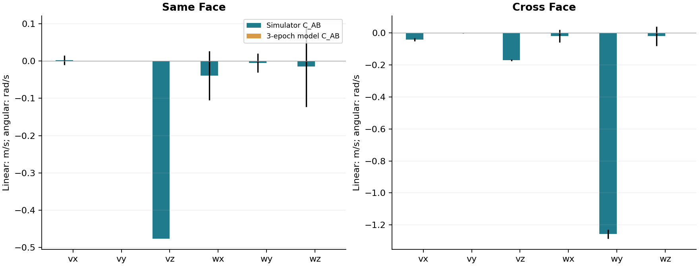
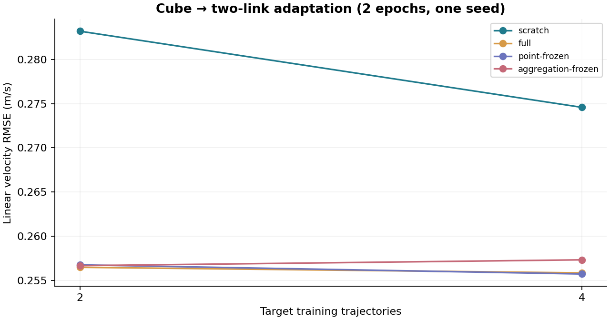
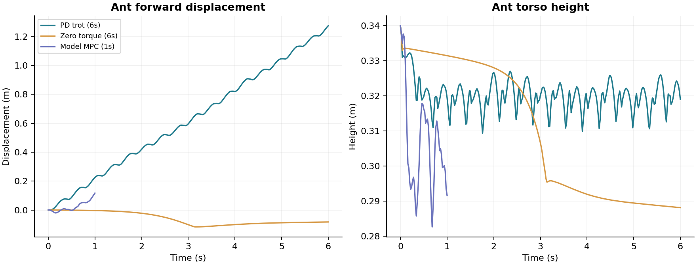

직접 실행한 실험과 결과 분석
실행 시각: 2026-10-18T21:32:55.406303+09:00. 모든 수치는 저장된 JSON·NPZ에서 생성했습니다. smoke 규모의 실행 검증이며 논문 가설의 성공을 선언하는 결과가 아닙니다.
1. 실행 환경과 검증 범위
Docker Compose의 루트 마운트 환경에서 CPU 신경망 학습과 MuJoCo 실험을 수행했습니다. Warp 검증은 RTX 4060 CUDA에서 수행했습니다.
| 패키지 | 실제 설치 버전 |
|---|---|
| torch | 2.7.1+cpu |
| mujoco | 3.16.0 |
| mujoco-warp | 3.16.0 |
| warp-lang | 1.18.0 |
| numpy | 2.3.5 |
검증 범위: Cube 세 모델 × 데이터 예산 2종 × seed 2개 = 12회 학습, Cube→두 링크 4가지 적응 × 예산 2종 = 8회 학습, Ant dynamics 학습·rollout·제어. 짧은 실험 전체 소요 시간은 53.2초이며, 컨테이너 빌드·최초 kernel compilation·렌더링 시간은 제외했습니다.
2. 물리 상태와 재현성
- MuJoCo Cube·두 링크·Ant 같은 상태 재실행: 최대 오차 0.
- 표면 속도와 위치 유한차분 비교: 최대 오차 4.01e-09 m/s.
- Warp 상태 재실행 검사: True. 이 작은 검사 통과가 GPU의 모든 실행에서 결정성을 보장한다는 뜻은 아닙니다.
- 상태 전환 0.02초, 내부 물리 step 0.005초. quaternion 순서 wxyz와 base angular velocity의 로컬 좌표계를 검사했습니다.
3. Cube 모델 비교
같은 trajectory 예산과 seed, optimizer, 3 epochs를 사용했습니다. 비교군마다 실제 파라미터 수와 latency를 기록하며 계산량이 같다고 가정하지 않습니다. 오차의 ±는 두 seed의 표준편차입니다. 데이터는 4개 시나리오, trajectory당 24 transitions이며 test는 독립 trajectory입니다.
| 모델 | train trajectories | 선속도 RMSE (m/s) | 위치 RMSE (m) | 파라미터 | CPU latency (ms) |
|---|---|---|---|---|---|
| state_mlp | 4 | 0.1226 ± 0.0069 | 0.02141 | 5836 | 1.04 |
| deepsets | 4 | 0.1391 ± 0.0163 | 0.01894 | 45626 | 3.34 |
| hierarchical | 4 | 0.1368 ± 0.0126 | 0.01512 | 45626 | 4.01 |
| state_mlp | 8 | 0.1082 ± 0.0006 | 0.01721 | 5836 | 1.07 |
| deepsets | 8 | 0.1194 ± 0.0029 | 0.01172 | 45626 | 3.46 |
| hierarchical | 8 | 0.1134 ± 0.0017 | 0.01502 | 45626 | 3.82 |

해석: 이 표는 학습과 비교 파이프라인이 동작한다는 증거입니다. 3 epochs와 두 seed만으로 계층형 구조의 우월성이나 표본 효율을 판단할 수 없습니다. 모델 크기와 입력 요약 방식도 다르므로 단일 평균 수치로 결론을 내리지 않습니다. 면당 16포인트·바닥 64포인트·local attention 2층의 smoke 설정은 면당 64포인트의 본 실험과 다릅니다.
훈련에서 제외한 바닥–벽 동시 접촉
아래는 budget 8, seed 0입니다. floor contact와 wall-only는 훈련에 있지만 동시 조합은 OOD에만 포함했습니다. ID/OOD의 접촉 강도와 분포가 다르므로 OOD 오차가 반드시 더 커야 하는 것은 아닙니다.
| 모델 | ID 선속도 RMSE | OOD 선속도 RMSE |
|---|---|---|
| state_mlp | 0.1088 | 0.1202 |
| deepsets | 0.1223 | 0.1297 |
| hierarchical | 0.1152 | 0.1254 |
4. 다중 접촉 개입: 독립 합산이 충분한가
각 seed에서 초기 상태·물성·action을 같게 고정하고 지지점만 ∅, A, B, A+B로 바꾸었습니다. C_AB = Δν_AB − Δν_A − Δν_B + Δν_∅입니다. 선속도와 각속도의 단위가 다르므로 norm을 따로 보고합니다.
| 배치 | 실제 선속도 결합 norm (m/s) | 실제 각속도 결합 norm (rad/s) | 모델 선속도 결합 오차 | 모델 각속도 결합 오차 |
|---|---|---|---|---|
| same_face | 0.4767 | 0.1343 | 0.4767 | 0.1344 |
| cross_face | 0.1749 | 1.2597 | 0.1749 | 1.2598 |

해석: 실제 simulator의 결합량은 0이 아닙니다. 이는 접촉 두 개의 반응을 독립적으로 더하는 것만으로는 설명되지 않는 효과가 있음을 보여줍니다. 반면 3-epoch 모델의 예측 결합량은 작아 실제 결합을 충분히 재현하지 못했습니다. 이 smoke 모델로 aggregation 학습 성공을 주장할 수 없습니다. 개입 지지대가 훈련 분포와 다르다는 점도 추가 통제가 필요합니다.
5. Cube → 두 링크 전이
source는 budget 8·seed 0의 Cube 모델입니다. target은 두 링크이며 2 epochs, seed 0에서 비교했습니다. 새로운 관절의 decoder는 source에서 학습되지 않았으므로 구조 전이 시 target에서 학습하도록 처리합니다. 자세한 freeze 예외와 파라미터 목록은 각 training.json에 기록됩니다.
| 적응 방식 | target trajectories | 선속도 RMSE (m/s) | 관절 위치 RMSE (rad) |
|---|---|---|---|
| scratch | 2 | 0.2832 | 0.1180 |
| full | 2 | 0.2565 | 0.1143 |
| point-frozen | 2 | 0.2568 | 0.1115 |
| aggregation-frozen | 2 | 0.2567 | 0.1219 |
| scratch | 4 | 0.2746 | 0.1466 |
| full | 4 | 0.2558 | 0.1356 |
| point-frozen | 4 | 0.2557 | 0.1463 |
| aggregation-frozen | 4 | 0.2573 | 0.1424 |

해석: 네 가지 적응 경로가 실행됐습니다. 적은 epoch와 단일 seed이므로 encoder 재사용의 이득은 아직 검증되지 않았습니다. 본 실험에서는 4·16·64 trajectory와 여러 seed, 동일 물성 전이와 물성 변화 전이를 구분해야 합니다.
6. Ant dynamics와 사족 보행
Ant는 floating base와 8개 hinge를 가진 자체 MJCF 모델입니다. 4개 train trajectory, 128 transitions, 3 epochs로 학습했습니다. 독립 test에서 1-step 위치 RMSE 0.0123 m, 선속도 RMSE 0.1513 m/s, 관절 위치 RMSE 0.0203 rad입니다. 16-step rollout의 수치 발산 비율은 0.0%이며, 발산이 없다는 사실만으로 물리 정확성을 뜻하지 않습니다.
| 제어기 | 평가 시간 | 전진 거리 | 평균 속도 | 낙상 프레임 비율 |
|---|---|---|---|---|
| PD diagonal trot | 6.0s | 1.274m | 0.212m/s | 0.0% |
| 무제어 | 6.0s | -0.083m | -0.014m/s | 0.0% |
| PD trot (동일 짧은 구간) | 1.0s | 0.225m | 0.225m/s | 0.0% |
| 학습 모델 MPC | 1.0s | 0.117m | 0.117m/s | 0.0% |

PD trot은 사람이 설계한 feedback gait이며 RL로 학습한 보행 정책이 아닙니다. MPC는 이 gait를 초기 action proposal로 사용하고 학습 모델의 비용으로 후보를 고릅니다. 성공한 보행 전체를 world model의 기여로 해석하면 안 됩니다. 실제 MuJoCo에서 별도로 action을 실행해 평가했습니다. MPC는 horizon 3, 후보 8, iteration 1이며 평균 planning 시간 150.9 ms입니다. 제어 간격 20 ms에 대한 실시간 제어 보장은 없습니다.
7. Cube 목표 위치 제어
같은 1초 구간에서 baseline의 최종 목표 거리 오차는 0.165m, 학습 모델 MPC는 0.178m였습니다. 각 성공 판정은 False / False입니다. smoke 학습의 외력 범위보다 제어 외력이 크므로 이 결과에는 action 분포 변화가 포함됩니다. 모델 성능 비교용 제어 실험에서는 같은 action 범위의 학습 데이터를 충분히 확보해야 합니다.
8. 남아 있는 연구 검증
- 현재 결과는 구현 확인입니다. 계층형 구조의 우월성과 few-shot 전이 이득은 미입증입니다.
- 원본 NeRD·FIGNet·RigidFormer 논문 성능을 재현한 결과는 없습니다. 내부 NeRD-like 비교군을 원본으로 표시하지 않습니다.
- 동일 파라미터·계산 예산 보정, 3개 이상의 seed, 충분한 학습 수렴, 64포인트/면 조건의 실험이 필요합니다.
- point density와 Hilbert 근접쌍 coverage를 확인한 뒤 국소 attention의 효과를 해석해야 합니다.
- contact mode probe·보조 mode loss는 본 구현의 기본 학습 경로에 포함되지 않습니다.
- 단일 world Warp adapter는 정확성 검증 중심입니다. GPU 병렬 수집 throughput 벤치마크는 별도로 수행해야 합니다.
재현 명령과 원시 결과
docker compose --profile gpu run --rm warp python -m cube quick --with-warp
docker compose run --rm -e MUJOCO_GL=osmesa research python -m cube render --trajectory outputs/quick/ant_baseline/rollout.npz --scene outputs/quick/ant_baseline/scene.json --output docs/assets/ant-walking.mp4 --stride 2
docker compose run --rm research python -m cube docs
GPU 없이 첫 명령을 docker compose run --rm research python -m cube quick로 실행하면 CPU 실험을 수행합니다. 결과는 outputs/quick에 저장됩니다. JSON은 모델별·시나리오별 오차, 실제 parameter 수, seed, trajectory 목록, 전이 시 불러온 파라미터, 각 control step을 포함합니다. 그래프는 cube report로 원시 결과에서 다시 생성할 수 있습니다.
자동 검증 기록
별도 GPU-enabled pytest 실행: 64 passed, 0 failures, 0 errors, 0 skipped. 상태 계약·실제 Warp physics·FK/속도 일치·rollout gradient·독립 합산·데이터 분리·전이 head를 포함합니다. 원시 결과는 outputs/quick/pytest.xml입니다.